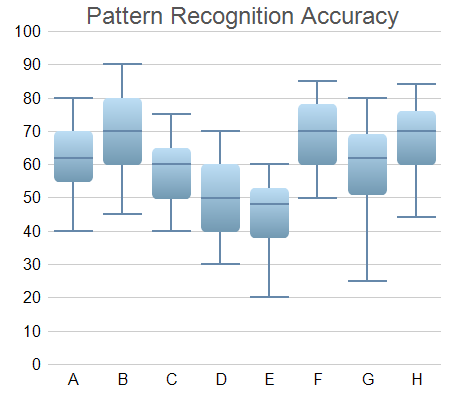

This example extends the Box-Whisker Chart (1) example to demonstrates various methods to control the chart appearance, including using different colors and font size, and using gradient shading and rounded corners for the boxes.
ChartDirector 7.1 (C++ Edition)
Box-Whisker Chart (2)

Source Code Listing
#include "chartdir.h"
int main(int argc, char *argv[])
{
// Sample data for the Box-Whisker chart. Represents the minimum, 1st quartile, medium, 3rd
// quartile and maximum values of some quantities
double Q0Data[] = {40, 45, 40, 30, 20, 50, 25, 44};
const int Q0Data_size = (int)(sizeof(Q0Data)/sizeof(*Q0Data));
double Q1Data[] = {55, 60, 50, 40, 38, 60, 51, 60};
const int Q1Data_size = (int)(sizeof(Q1Data)/sizeof(*Q1Data));
double Q2Data[] = {62, 70, 60, 50, 48, 70, 62, 70};
const int Q2Data_size = (int)(sizeof(Q2Data)/sizeof(*Q2Data));
double Q3Data[] = {70, 80, 65, 60, 53, 78, 69, 76};
const int Q3Data_size = (int)(sizeof(Q3Data)/sizeof(*Q3Data));
double Q4Data[] = {80, 90, 75, 70, 60, 85, 80, 84};
const int Q4Data_size = (int)(sizeof(Q4Data)/sizeof(*Q4Data));
// The labels for the chart
const char* labels[] = {"A", "B", "C", "D", "E", "F", "G", "H"};
const int labels_size = (int)(sizeof(labels)/sizeof(*labels));
// Create a XYChart object of size 450 x 400 pixels
XYChart* c = new XYChart(450, 400);
// Set the plotarea at (50, 30) and of size 380 x 340 pixels, with transparent background and
// border and light grey (0xcccccc) horizontal grid lines
c->setPlotArea(50, 30, 380, 340, Chart::Transparent, -1, Chart::Transparent, 0xcccccc);
// Add a title box using grey (0x555555) 18pt Arial font
TextBox* title = c->addTitle(" Pattern Recognition Accuracy", "Arial", 18, 0x555555);
// Set the x and y axis stems to transparent and the label font to 12pt Arial
c->xAxis()->setColors(Chart::Transparent);
c->yAxis()->setColors(Chart::Transparent);
c->xAxis()->setLabelStyle("Arial", 12);
c->yAxis()->setLabelStyle("Arial", 12);
// Set the labels on the x axis
c->xAxis()->setLabels(StringArray(labels, labels_size));
// For the automatic y-axis labels, set the minimum spacing to 30 pixels.
c->yAxis()->setTickDensity(30);
// Add a box whisker layer using light blue (0x99ccee) for the fill color and blue (0x6688aa)
// for the whisker color. Set line width to 2 pixels. Use rounded corners and bar lighting
// effect.
BoxWhiskerLayer* b = c->addBoxWhiskerLayer(DoubleArray(Q3Data, Q3Data_size), DoubleArray(Q1Data,
Q1Data_size), DoubleArray(Q4Data, Q4Data_size), DoubleArray(Q0Data, Q0Data_size),
DoubleArray(Q2Data, Q2Data_size), 0x99ccee, 0x6688aa);
b->setLineWidth(2);
b->setRoundedCorners();
b->setBorderColor(Chart::Transparent, Chart::barLighting());
// Adjust the plot area to fit under the title with 10-pixel margin on the other three sides.
c->packPlotArea(10, title->getHeight(), c->getWidth() - 10, c->getHeight() - 10);
// Output the chart
c->makeChart("boxwhisker2.png");
//free up resources
delete c;
return 0;
}